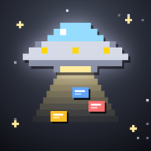

Mothership 是一個像 Trello 的看板 App：卡片、清單、行事曆、時間軸、年度回顧，手機、iPad、電腦登入同一個帳號就會即時同步。照著這份教學做，你就會有一份完全屬於自己的 Mothership。不用會寫程式，也不用會 GitHub。
把整件事想成「開一間自己的店」：
已經有 GitHub 帳號的話，登入後直接跳到第 2 步。
依序填入 Email、密碼、使用者名稱，按 Continue 或 Create account。
amy-notes，你的 Mothership 網址就會是 https://amy-notes.github.io/program_manager/。只能用英文、數字和減號。可能會要你做一個小驗證（選圖片之類），證明你不是機器人。
去信箱收 GitHub 寄來的驗證碼，填回網頁。
如果問你一些問卷問題，可以按 Skip personalization 跳過。方案選免費（Free）。
確定已經登入 GitHub，打開原作者的倉庫：
https://github.com/antony910911/program_manager在頁面右上方找到 Fork 按鈕（旁邊有一個分岔的小圖示），按下去。
會出現「Create a new fork」頁面。什麼都不用改，Repository name 保持 program_manager（改了的話，下面的網址也要跟著改），直接按最下面綠色的 Create fork。
github.com/你的使用者名稱/program_manager，標題下面有一行小字「forked from antony910911/program_manager」。這就是你自己的倉庫了。複製來的倉庫，GitHub 為了安全會先把「自動部署」關起來，要你自己按一下打開。
在你的倉庫頁面上方，點 Actions 分頁。或直接打開：github.com/你的使用者名稱/program_manager/actions
會看到一段說明「Workflows aren't being run on this forked repository」，按綠色的 I understand my workflows, go ahead and enable them。
點倉庫上方的 Settings（齒輪），左邊選單點 Pages。或直接打開：github.com/你的使用者名稱/program_manager/settings/pages
找到 Build and deployment 底下的 Source，下拉選單選 GitHub Actions。選了就會自動儲存。
打開 supabase.com，按 Continue with GitHub，用剛剛的 GitHub 帳號登入，按 Authorize 同意。
第一次會要你建立一個「組織」（Organization）：名稱隨便填（例如你的名字），Type 選 Personal，Plan 選 Free，按 Create organization。
接著建立專案（New project），填這幾格：
mothership。按 Create new project。
等 1～2 分鐘，畫面會從「Setting up project」變成專案首頁。
這一步是告訴資料庫「要怎麼存看板」，以及「每個人只能看自己的資料」。你只要複製、貼上、按執行。
在 Supabase 左邊選單點 SQL Editor（一個 >_ 的圖示），按 + New query（或 New SQL snippet）。
按下面的 複製，把整段貼進 Supabase 的大輸入框（先把裡面原本的字刪掉）：
讀取中…這段來自你倉庫裡的 supabase/schema.sql。
按右下角的 Run（或鍵盤 Ctrl＋Enter，Mac 是 ⌘＋Enter）。
左邊選單點 Authentication，再點 URL Configuration。
https://你的使用者名稱.github.io/program_manager/之後點確認信、或用「Email 連結」登入時，才會回到你的網站。
建議做：關掉「註冊要收確認信」，註冊完就能直接登入。
在 Supabase 專案頁面最上方按 Connect；或左下角齒輪 Project Settings › Data API 和 API Keys。
找到這兩個值，先複製到記事本：
https://abcdefghijkl.supabase.cosb_publishable_ 開頭）；如果只看到 anon public（eyJ 開頭的一長串），用它也可以。secret 或 service_role 那把，那把等於資料庫的萬能鑰匙。回到你的 GitHub 倉庫，點 Settings › 左邊 Secrets and variables › Actions。或直接打開：github.com/你的使用者名稱/program_manager/settings/variables/actions
確認上方選的是 Variables 分頁（不是 Secrets），按綠色的 New repository variable。
第一個：Name 完全照抄（大小寫、底線都要一樣），Value 貼上 Project URL，按 Add variable。
VITE_SUPABASE_URL再按一次 New repository variable。第二個：Name 照抄，Value 貼上 Publishable key（或 anon key），按 Add variable。
VITE_SUPABASE_ANON_KEYVITE_SUPABASE_URL 和 VITE_SUPABASE_ANON_KEY。點倉庫上方的 Actions，左邊點 Deploy to GitHub Pages。
右邊會有一個 Run workflow 按鈕，按下去，再按跳出來的綠色 Run workflow。
等 1～3 分鐘（可以重新整理頁面看進度），出現綠色勾勾 ✅ 就部署好了。
打開你的網址：
https://你的使用者名稱.github.io/program_manager/切到 註冊 分頁，輸入 Email 和密碼（至少 6 個字），建立帳號。
檢查有沒有接對資料庫：回到 Supabase，左邊點 Authentication › Users。
用 Safari 打開你的網址，用同一組 Email／密碼在 登入 分頁登入。
按分享按鈕（方框加一個向上箭頭），往下滑選 加入主畫面，再按 新增。之後從主畫面的圖示打開，就像一般 App。
用 Chrome 打開網址並登入，按右上角 ⋮ › 加到主畫面（或「安裝應用程式」）。
用 Chrome、Edge 或 Safari 打開網址並登入。想要獨立視窗：Chrome／Edge 網址列右邊有一個「安裝」小圖示。
Beamup 是一個快速記事的小 App：在手機上隨手打一句待辦或行程，就會直接變成 Mothership 的卡片。Beamup 的資料存在你自己的手機裡，所以直接用原作者的 Beamup 網址就好，不用另外架。
回到 Supabase 的 SQL Editor › + New query，把下面這段貼上、按 Run（一樣可能跳警告，按 Run this query）：
讀取中…打開你的 Mothership › 右上角 設定 › Beamup › 產生連接碼 › 複製連接碼。
手機打開 Beamup（一樣可以加入主畫面）：
https://thought-task-entry.antony910912.workers.dev右上角齒輪 設定 › 「待辦事項 → 專案管理工具」，把連接碼貼進第一格，按 測試連線。
DEPLOY.md「連接行事曆」做，或請 Claude 帶你做（第 12 步）。原作者之後加了新功能，你的 Mothership 不會自動跟著更新（因為是你自己的一份）。想更新的時候：
登入 GitHub，打開你自己的倉庫 github.com/你的使用者名稱/program_manager。
如果有新版，會看到一行「This branch is X commits behind…」。按旁邊的 Sync fork，再按綠色的 Update branch。
GitHub 會在 1～3 分鐘內自動重新部署（Actions 分頁會出現新的一筆，等它變綠色勾勾）。之後把手機上的 Mothership 完全關掉再打開，就是新版了。右上角 設定 › 最下面會顯示版本時間。
保險起見，每次更新後把第 5 步的 SQL 再跑一次（用了 Beamup 的話，第 10 步的也跑一次）。這些 SQL 可以重複執行，不會動到你的資料；新版如果改了資料庫規則，這樣就會補上。
想多一個功能、換個顏色？直接用中文跟 Claude 說，它會幫你改好你自己的那一份：
打開 claude.ai/code，登入 Claude 帳號（需要付費方案）。
照畫面指示連接 GitHub，選你自己的 你的使用者名稱/program_manager 倉庫。
用平常說話的方式描述你要什麼，例如：
我想在 Mothership 的卡片上多一個「地點」欄位，打開卡片可以填，卡片上會顯示一個小地標圖示。改好之後幫我推上去，讓網站自動部署。Claude 改好、推上 GitHub 後，網站會自動部署。重開 Mothership 就能看到。
網站還沒部署成功。檢查：第 3-2 步的 Source 是不是 GitHub Actions；第 8 步的 Actions 有沒有出現綠色勾勾。剛部署完也可能要再等一兩分鐘。網址最後的 /program_manager/ 也要打對。
第 3-1 步還沒做：到 Actions 分頁按 I understand my workflows, go ahead and enable them。
點進那一筆看哪一步失敗。如果是 deploy 那步、訊息提到 Pages，通常是第 3-2 步的 Source 沒選 GitHub Actions，選好後按右上角 Re-run jobs。其他情況可以截圖問 Claude（見最下面）。
另一個叫 Deploy calendar function 的項目是行事曆同步用的，沒設定時會自動略過，不用管它。
照第 6 步的 2 把 Confirm email 關掉，再登入一次。已經註冊過的帳號也可以直接登入。
多半是第 5 步的 SQL 沒有成功執行。回到 SQL Editor 再跑一次，看到 Success 為止。也確認第 7 步填的是你自己專案的網址和 key。
網站還接在原作者的資料庫：回到第 7 步檢查兩個 Variable（名稱完全一樣、放在 Variables 分頁），然後重做第 8 步的 1～3，重新部署一次。
第 6 步的 Site URL 和 Redirect URLs 要填你自己的網址，結尾的 /program_manager/ 也要有。
把 Mothership 從背景完全關掉（從螢幕下方往上滑，把它滑掉），再打開一兩次。右上角 設定 › 最下面會顯示版本時間。
還是卡住的話，把下面這段複製到 claude.ai 的對話框，把【】換成你的狀況，最好再附一張截圖：
我是完全不會寫程式的新手，正在照一份教學架設 Mothership 看板 App（從 GitHub 的 antony910911/program_manager Fork 一份，用 GitHub Pages 放網站、Supabase 當資料庫和登入，Supabase 的網址和 key 填在 GitHub 的 Actions Variables：VITE_SUPABASE_URL、VITE_SUPABASE_ANON_KEY）。
我做到【第幾步、在做什麼】，畫面顯示【貼上畫面上的文字或附截圖】。
請用簡單的中文，一步一步告訴我下一步要按哪裡。你的使用者名稱/program_manager，Actions 有綠色勾勾VITE_SUPABASE_URL 和 VITE_SUPABASE_ANON_KEY